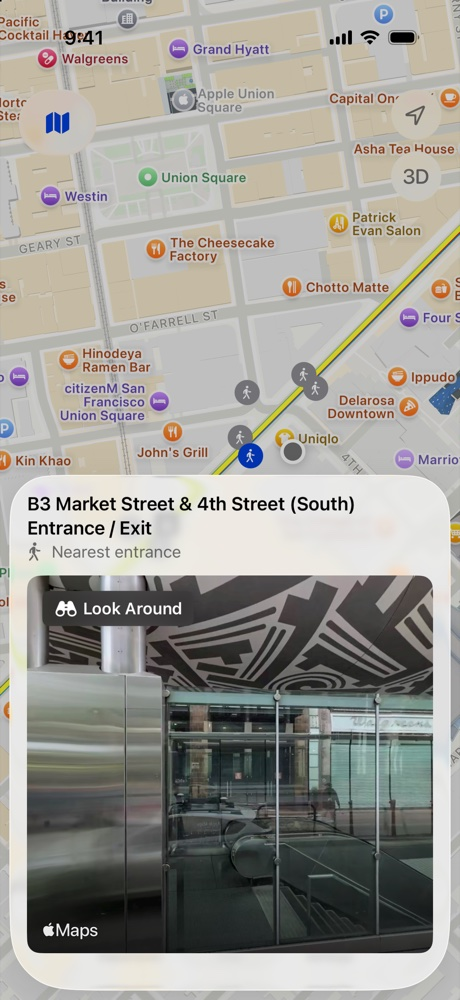
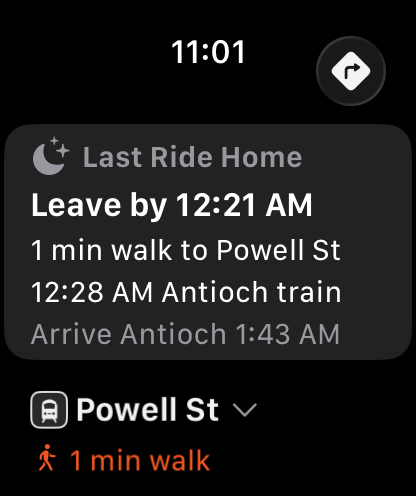
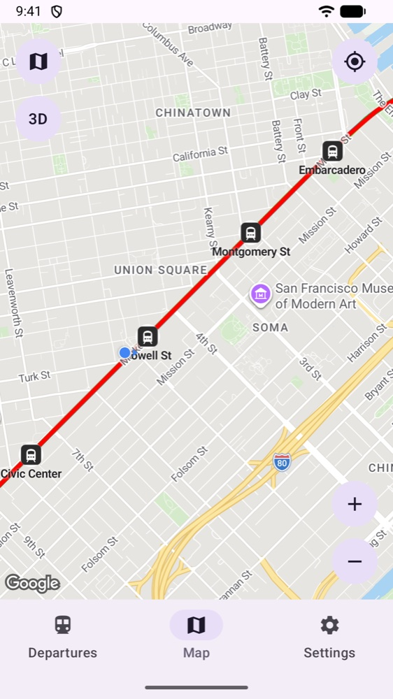

The next train, at a glance
Opens on the station you're closest to, with live times by platform and how many cars each train has.
Last Ride Home
Set your home station and see when to leave for the last train home tonight.
Walk time and map
Your walk to the station, every line and station on the map, and the street view of each entrance.
Private by design
No account and no ads. Your location is never sent to us.
Support, privacy and accessibility
iPhone and Apple Watch
Android
Questions, problems or suggestions? Email transitwatchapp@gmail.com.